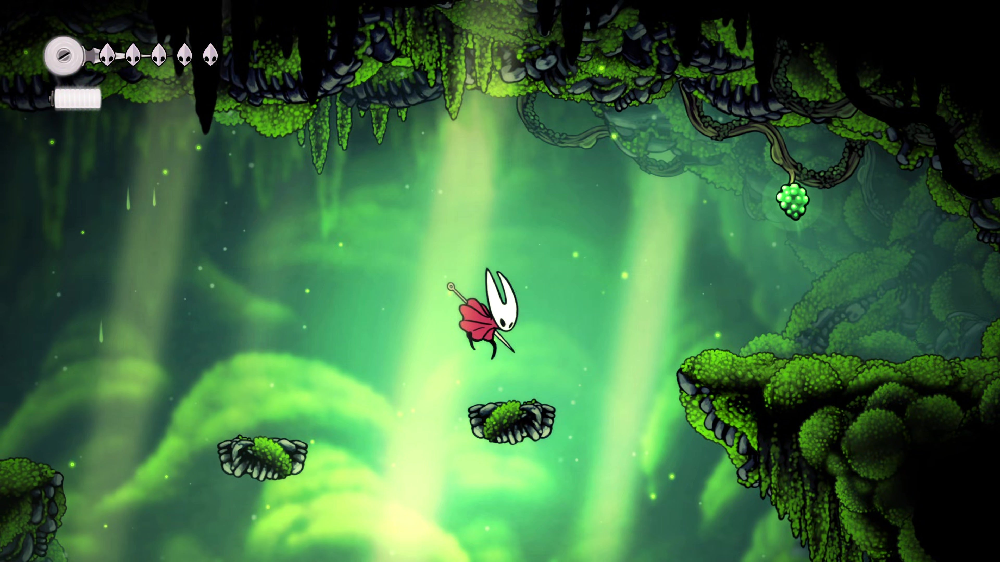
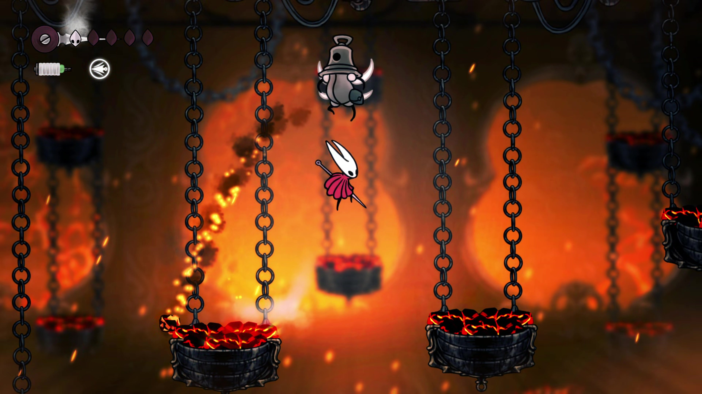
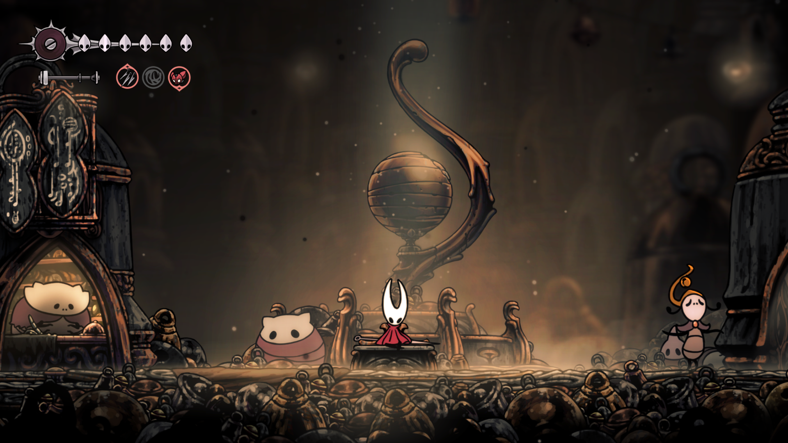
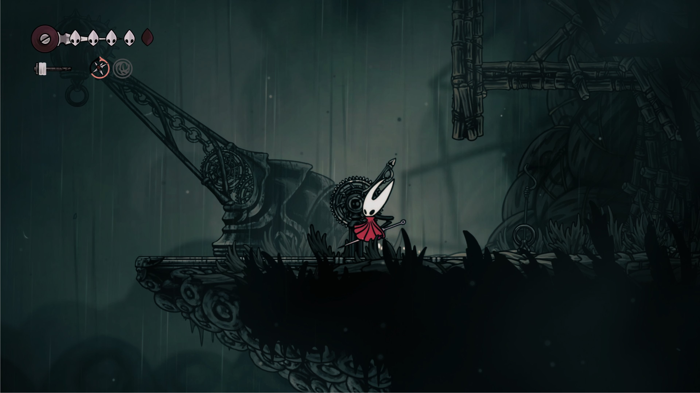
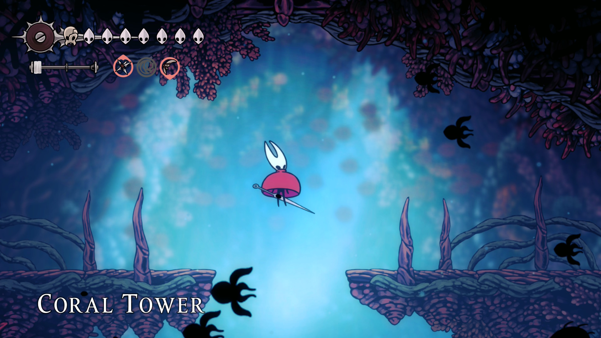
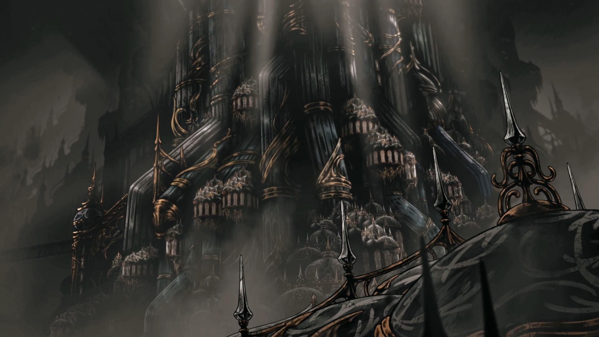

Uma Jornada Até o Topo
Em Hollow Knight: Silksong, Hornet atravessa regiões decadentes, cidades douradas, cavernas infestadas e montanhas acima das nuvens.

Moss Grotto
O primeiro grande território explorado por Hornet. Um labirinto orgânico coberto por musgo, vegetação densa e criaturas primitivas.
Aqui o jogador aprende os fundamentos do combate, movimentação e exploração vertical.

Deep Docks
Uma gigantesca rede de portos subterrâneos construída abaixo do reino.
Correntes enferrujadas, plataformas móveis e criaturas marítimas tornam a travessia extremamente perigosa.

Bellhart
Uma cidade industrial marcada por sinos, fumaça e mecanismos enferrujados.
Seus habitantes vivem presos a rituais antigos, enquanto máquinas ecoam incessantemente pelos corredores metálicos.

Greymoor
Uma região melancólica dominada por chuva constante e ruínas esquecidas.
Espíritos vagam entre construções abandonadas, criando uma atmosfera pesada e misteriosa.

Coral Forest
Uma floresta silenciosa formada por estruturas semelhantes a corais gigantes.
A região mistura beleza e desconforto, com inimigos escondidos entre raízes e passagens estreitas.
Citadel
O topo de Pharloom. Um reino dourado acima das nuvens, onde os últimos segredos aguardam Hornet.
